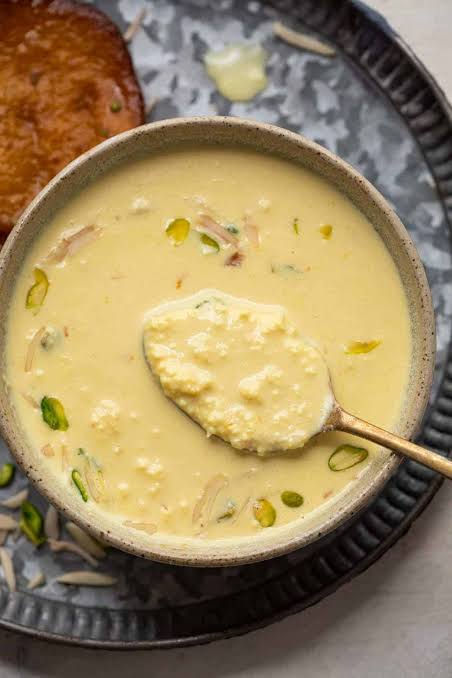

Rabdi also known as Rabri is a North Indian traditional sweet dish made with full fat milk, sugar, cardamoms and nuts. It is served as a dessert . Rabri tastes very delicious, creamy & is full of flavors from the cardamoms and saffron. Making rabri at home does take some time & needs patience but the end results are worth the effort.
Slice, sliver or chop the nuts and set aside.
Add 1.25 litres of full fat whole milk in a kadai, and slowly heat the milk on a low to medium heat. Stir a few times when the milk gets heated. The milk should slightly simmer but not boil. Once hot, the milk with start to froth or form a layer of cream (malai) on top.
Continue simmering and stirring the milk on a low heat untill milk is reduced to around 400ml
The process of reducing milk will take time so be patient. Rabdi should be ready in 45-60 minutes.
After the milk is reduced to 1/2 its orignal quantity, add 2.5 to 3 tablespoons of sugar to taste.
Then add a 15 to 18 strands of crushed saffron and ½ teaspoon cardamom powder. Stir gently.
Switch off the heat once the rabdi reaches your preferred consistency. In ous case, we are reducing milk it to 1/3rd of its original quantity
Now add the sliced almonds and pistachios and let rabdi cool at room temperature. Transfer the cooled rabdi in an air-tight steel container and refrigerate it for a few hours to cool.
Whether you serve hot or warm or cold, garnish with some of the blanched nuts and sprinkle a bit of crushed saffron if you like.
Enjoy your Rabdi!